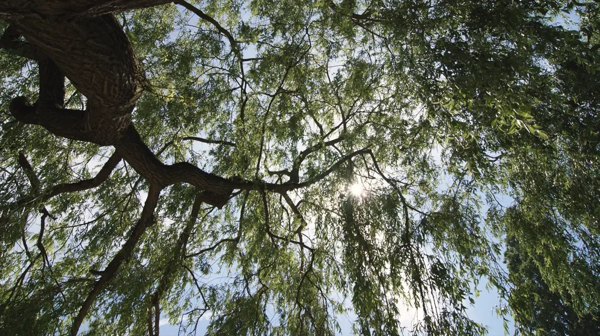
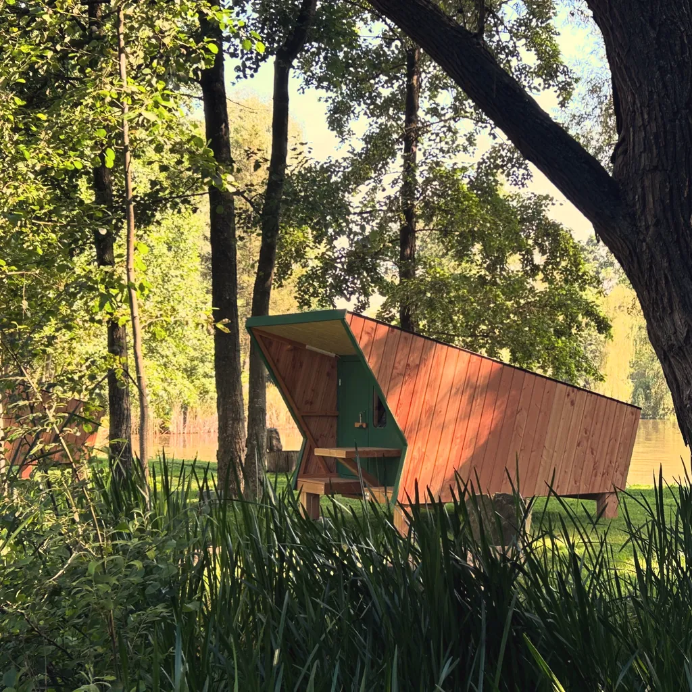
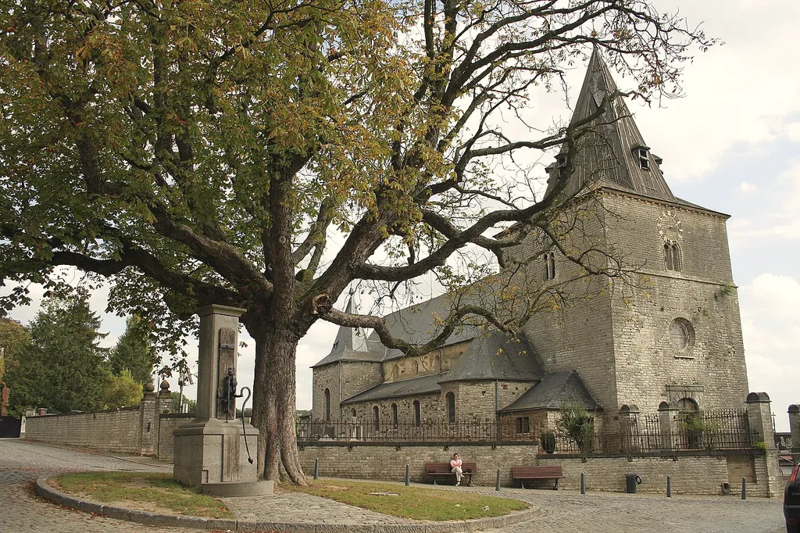
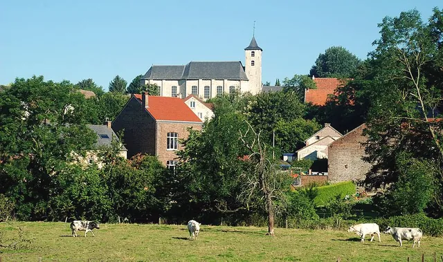
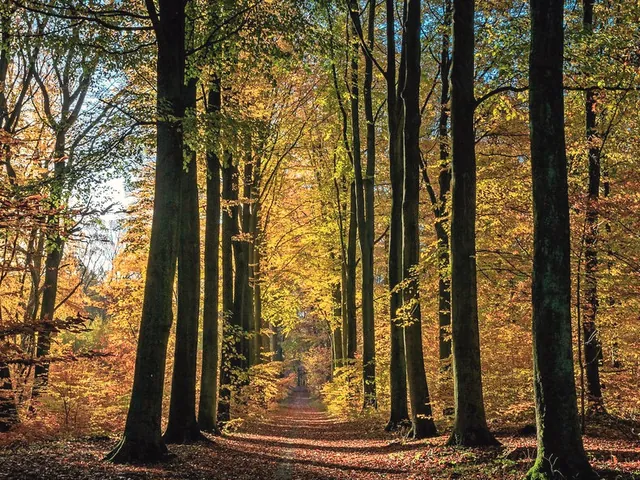
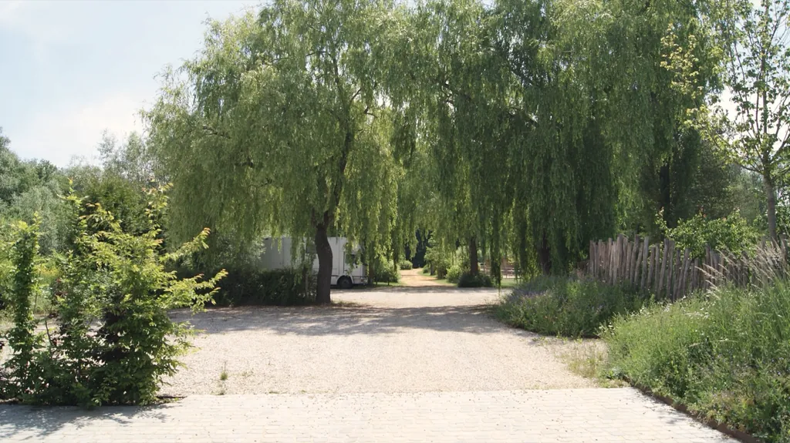

The camp from above. Touch the photo: the water responds.
visuel provisoire · grok-feuilles-saule-herbier

The camp owes its name to the many willows that grow here.
Our DNA
Here, we slow down.
Tucked away in the heart of Walloon Brabant, Willow Camp is a small haven of peace. A place to switch off from everyday life and reconnect with nature, with yourself and with others.
Read, draw, meditate, wander, enjoy a coffee or a tea, and let nature become your priority again.
camping
nature
quiet
bivouac
simplicity
eco-responsible
sharing
family
Formerly Camping au Val-Tourinnes, then O Pas Sage and Présentement Camping: the place has been called Willow Camp since December 2022.
The sample book
Four ways to camp
A simple offer: pitches for your tent or vehicle, and two unusual places to sleep, by the night.
Tent pitch
Tent pitch
Pitch your tent on the grass
from 17 € per night
Around the playground and near the pond, or further away, between the two ponds.
Tent pitch
1 pers.
2 pers.
+ adult
+ child
+ dog
17 €
27 €
10 €
5 €
5 €
16 A electricity included, −€3 per night without
One parking space, access to the shared washrooms
Vehicle pitch
Motorhome, caravan, van or roof tent
from 22 € per night
16 A hook-up, CEE or standard socket depending on the pitch (bring an adapter). In very wet weather, 6 hard-standing pitches.
Vehicle pitch
1 pers.
2 pers.
+ adult
+ child
+ dog
Motorhome, caravanwater refill included
25 €
35 €
10 €
5 €
5 €
Campervanwater refill not included
22 €
32 €
10 €
5 €
5 €
Service point at the entrance: grey water and chemical toilets
Motorhome and caravan: 8.5 m maximum
+€5 per night over 8.5 m : to be confirmed

Hiker cabin
An unusual shelter that replaces the tent
from 45 € per night
Designed for travelling campers: 4 m², a bed for two, electricity and a small light, storage, a washing line and a ring for your bikes. Just bring your sleeping bag and pillow.
Four cabins facing the small pond. Pick a colour:
2 people maximum · −10% for 2 nights, −20% from 3 nights
No bed linen · no dogs · no baby cot
Shepherd's hut
An unusual, cosy and comfortable stay
from 110 € per night
Bed made and towels provided, a small shower room with washbasin and toilet, a dining corner and a fitted kitchen.
2 people: €110 · 4 people: from €150
−20% on weekdays, −30% for 2 nights, −40% from 3 nights
Le Willow Camp, un camping paisible et champêtre à Tourinnes
Newspaper name and date : to be completed
Campers' reviews
Real reviews to be taken from the booking platform, with their authors' consent.
to be completed
Tourist campsite ★★, approved by the Commissariat général au Tourisme
Around the camp
Three quarters of the municipality is farmland. To the north, the Meerdael forest and its tall beeches; all around, stone villages and waymarked walks.
1 Wing Historical Centre at the air base: 2nd and 4th Sundays of the month

Saint Martin's Church
In Tourinnes-la-Grosse, one of the oldest churches in Walloon Brabant, overlooking the whole valley. The Saint Martin festival is an artistic highlight there.
Photo credit : to be completed

Saint-Rémy-Geest
A hillside village built around its church, with houses and farms in Gobertange stone.
Photo credit : to be completed

Meerdael forest
With Heverlee wood: 2,050 ha of broadleaf forest, roe deer, play areas for little ones and the tree-trunk sculptures of the Pad van Ad.
Photo credit : to be completed

Practical info
Arrivals at the camp
Monday → Thursday
15h30 – 18h30
Friday, Saturday and the day before a public holiday
15h30 – 19h
Sunday
no arrivals, day off
Departure
before noon
Reception: Mon–Fri 3:30–6:30 pm · Sat 3:00–6:45 pm · Sun by appointment · to be confirmed
Brussels time
Find us
Rue du Grand Brou 48 1320 Tourinnes-la-Grosse (Beauvechain) Belgium